IPCEI-CIS Programme
VATP HVAC AI Platforma
Inteliģenta ēku enerģijas vadības sistēma Ventspils Augsto Tehnoloģiju Parkam.
Februāris 2026 · Prototips
02
Arhitektūra
Kā sistēma ir uzbūvēta (šobrīd)
Sensori vāc datus, kas glabājas lokāli VATP un tiek dublēti EU mākonī. AI modeļi tiek apmācīti mākonī un atgriezti atpakaļ.
Mākonis
(EU serveris)
AI / ML apmācība
Enerģijas prognozēšanas modeļi, apmācība katru mēnesi
Ilgtermiņa analītika
Ietaupījumu pārskati, salīdzinājumi, datubāzes kopija
Integrācijas
Nord Pool · Open-Meteo · Elektrum
↕ datu sinhronizācija ik pēc dažām stundām / modeļu atjauninājumi plūst uz leju
Lokāli
pie VATP
Tīmekļa lietotne
Enerģijas analītika · brīdinājumi · telpu komforts · TV ekrāni · RBAC · audita žurnāls
Edge kontrolieris
HVAC vadība reāllaikā · AI secinājumi · strādā bezsaistē
Datubāze
Sensoru vēsture (laika rindas) · ēkas konfigurācija · glabāšana (?)
↕ sensoru rādījumi ik 15–30 min / vadības komandas plūst atpakaļ uz leju
Ēkā
HVAC iekārtas
Siltumsūkņi · dzesētāji · ventilācija · vārsti
Telpu sensori
Temperatūra · CO₂ · mitrums · caur dokstacijām
Enerģijas skaitītāji
Viedie skaitītāji · apakšskaitītāji pa zonām
03
Dati un savienojumi
Kā dati tiek vākti, glabāti un aizsargāti
Dati glabājas lokāli VATP un tiek dublēti EU mākonī. AI modeļi tiek apmācīti mākonī un nosūtīti atpakaļ uz vietas.
📡
Sensori vāc datus
Telpu sensori un enerģijas skaitītāji nolasa temperatūru, CO₂, mitrumu un patēriņu ik 15–30 minūtes
→
🔌
Vārteja savieno
Neliels lokāls serveris (vārteja) pārtulko signālus no HVAC iekārtām un sensoriem vienā datu plūsmā platformai
→
🖥️
Glabājas lokāli
Dati glabājas VATP serverī. Nekas neatstāj Latviju bez atļaujas. 90 dienas pilnā izšķirtspējā, ilgāki kopsavilkumi atbilstībai
→
☁️
Analītika mākonī
Apkopotie (nepersonālie) dati ik pēc dažām stundām sinhronizējas uz EU mākoni ilgtermiņa analīzei, ietaupījumu pārskatiem un AI modeļu apmācībai
→
🤖
AI darbojas
Apmācīti modeļi tiek nosūtīti atpakaļ lokāli. Sistēma automātiski regulē apkuri un dzesēšanu — mākoņa savienojums ikdienas darbībai nav nepieciešams
Primāri Latvijā — dati glabājas lokāli VATP, tiek dublēti EU mākonī
Atvērts jautājums: Cik ilgi precīzi glabāt vēsturiskos datus un kas ir formāli atbildīgs saskaņā ar GDPR
Strādā bezsaistē — ja mākonis nav sasniedzams, ēka turpina darboties uz pēdējo AI modeli
04
Enerģijas pārskats
Galvenais panelis
Nord Pool elektroenerģijas cenas, laiks no Open-Meteo, ēkas slodze un komforta dati — viss reāllaikā.
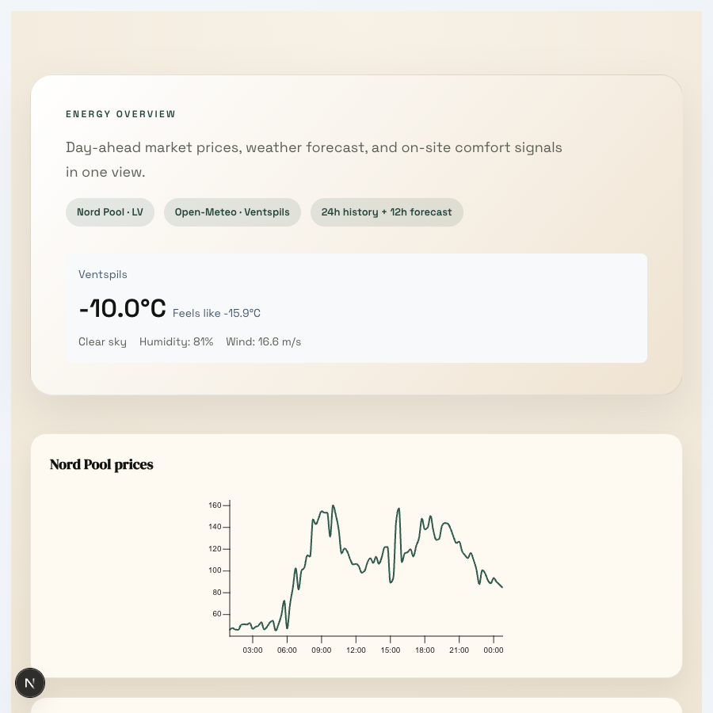
Tiešais laiks (Ventspils) ar Nord Pool · LV un Open-Meteo datu avotiem. 24h vēsture + 12h prognoze.
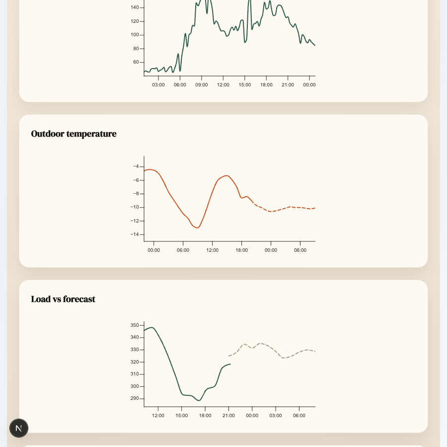
4 tiešraides grafiki: Nord Pool cenas, ārējā temperatūra, ēkas slodze pret prognozi, komforta tendences.
05
Enerģijas analītika
Izmaksu analītika un sadalījums
Seko faktiskajām enerģijas izmaksām ar kategoriju sadalījumu, periodu salīdzinājumu un siltumsūkņa pret pilsētas apkuri izmaksu salīdzinājumu.
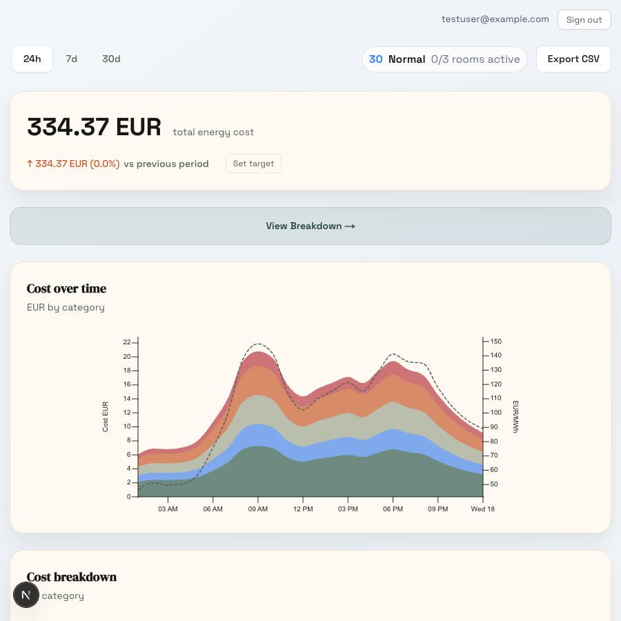
334 EUR kopā (24h) · slāņota laukuma diagramma pa kategorijām (HVAC, dzesēšana, apkure, apgaismojums, citi) ar Nord Pool cenu līniju.
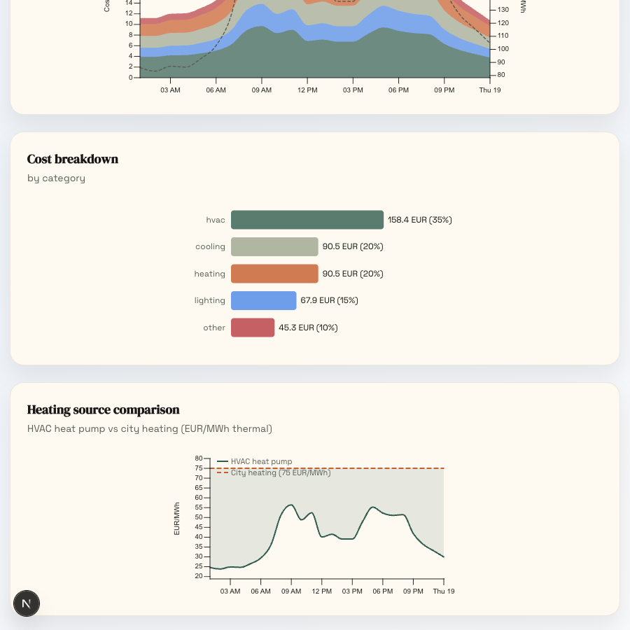
Izmaksu sadalījums pa kategorijām (joslu diagramma) + siltumsūknis pret pilsētas apkuri — HVAC darbojas ~30 EUR/MWh pret fiksētu pilsētas tarifu 75 EUR/MWh.
06
Brīdinājumi un signāli
Brīdinājumi
Katram sensoram var iestatīt sliekšņus — kad tie tiek pārsniegti, parādās brīdinājums. Trīs līmeņi: kritisks, brīdinājums, informatīvs. Katru var apstiprināt un atzīmēt kā atrisinātu.
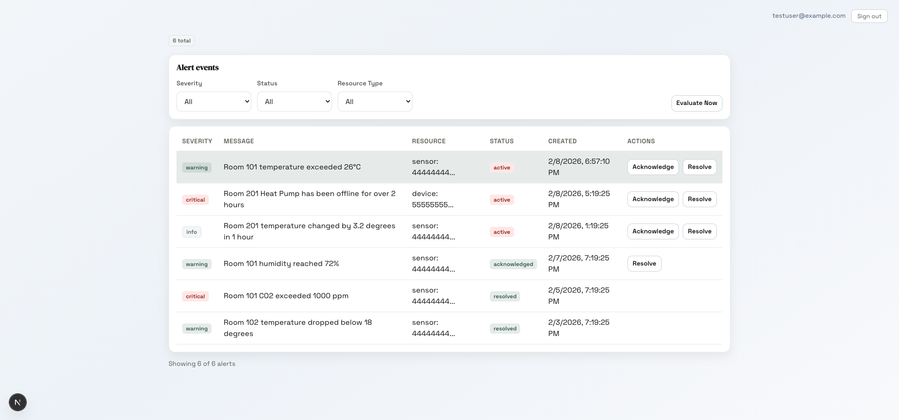
Brīdinājumu tabula ar smaguma filtriem un statusa izsekošanu (aktīvs / apstiprināts / atrisināts). Brīdinājumu veidi: augsts slieksnis, zems slieksnis, ierīce bezsaistē, pārāk straujas izmaiņas.
07
Entitāšu pārvaldība
Ēkas hierarhija
Pilna hierarhijas pārvaldība: Organizācija → Ēka → Stāvs → Telpa → Sensors/Ierīce.
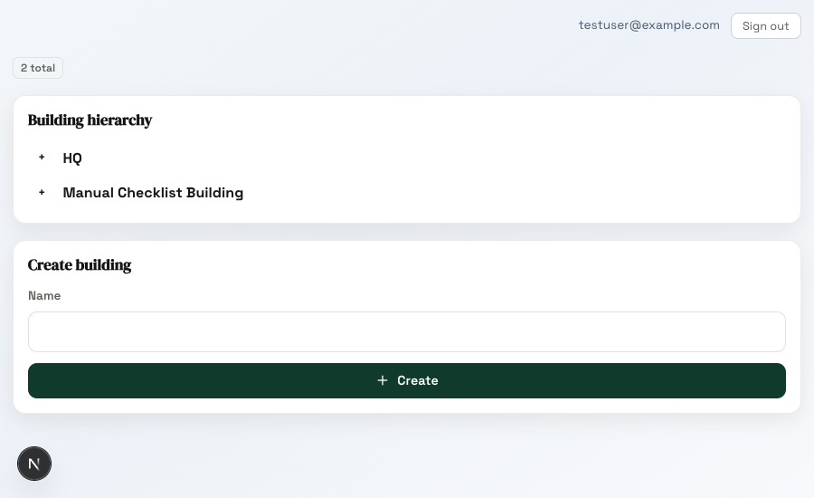
Ēkas hierarhija ar paplašināmu struktūru un izveides formu.
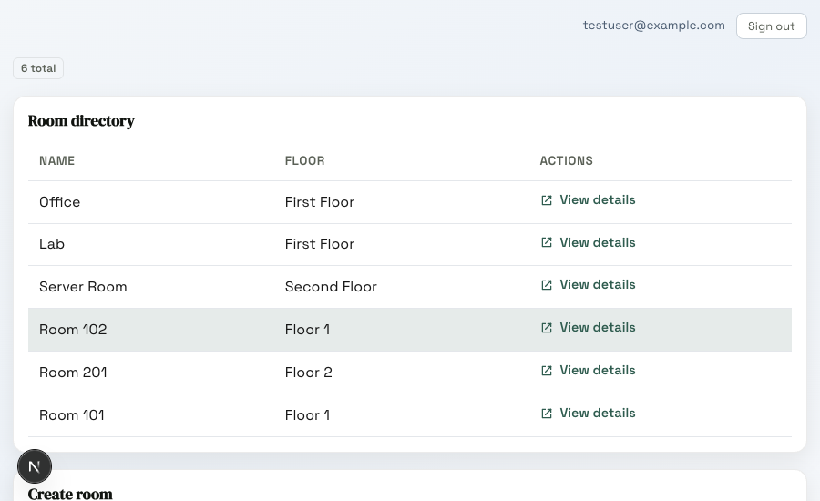
Telpu saraksts ar norādi uz stāvu un saiti uz detaļām.
08
Telpu inteliģence
Telpu komforta panelis
Telpas līmeņa panelis ar reāllaika rādītājiem, telemetrijas grafikiem, ierīču statusu, komforta vērtējumu un apmeklētāju atsauksmēm.
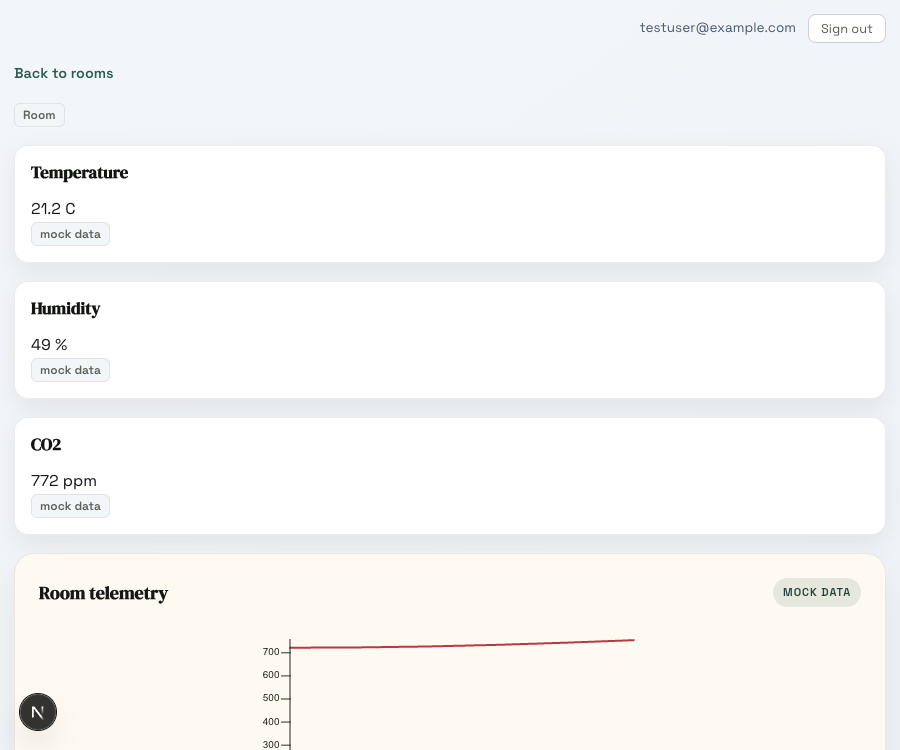
Telpa 101: temperatūra (21,2°C), mitrums (49%), CO2 (772 ppm) rādītāji, reāllaika telemetrijas grafiks, ierīču statuss (3 sensori) un komforta vērtējums (100 = Lielisks).
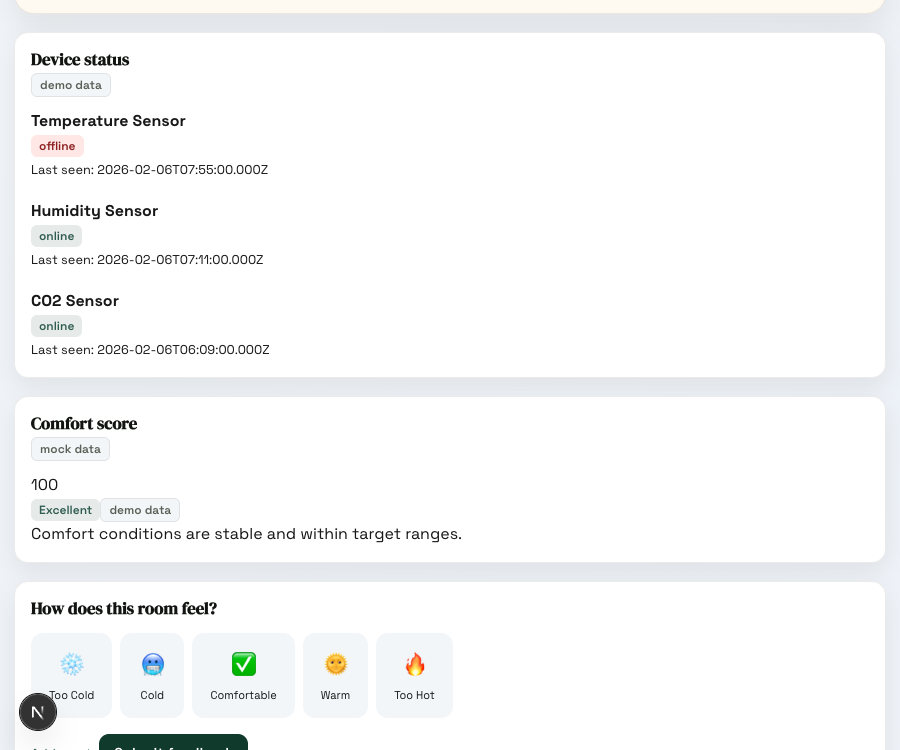
Apmeklētāju siltuma atsauksmju logrīks (Par aukstu → Par karstu) ar emoji izvēli, neobligātām piezīmēm un neseno atsauksmju laika līniju, kas parāda komforta modeļus laika gaitā.
09
Ierīču darbība
Ierīču statuss
Pārskats par visām ierīcēm — kas ir tiešsaistē, kas bezsaistē, un cik sen pēdējo reizi saņemts signāls. Kārtojams pēc laika kopš pēdējā signāla.
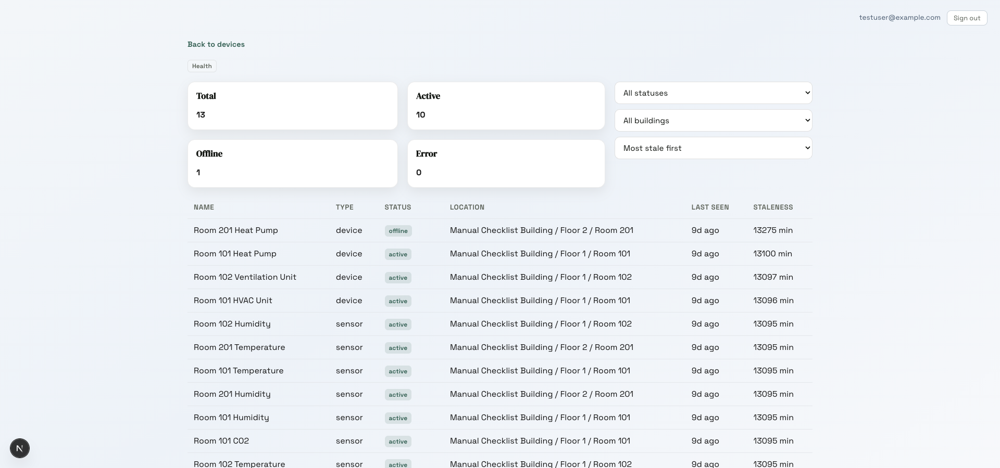
13 ierīces kopā — 10 aktīvas, 1 bezsaistē, 0 kļūdas. Filtrējamas pēc statusa un ēkas.
10
Administrācija
Administratora panelis un RBAC
Lietotāju pārvaldība, lomu piešķiršana, atļauju matrica un vadības politikas konfigurācija. Viss glabājas datubāzē.
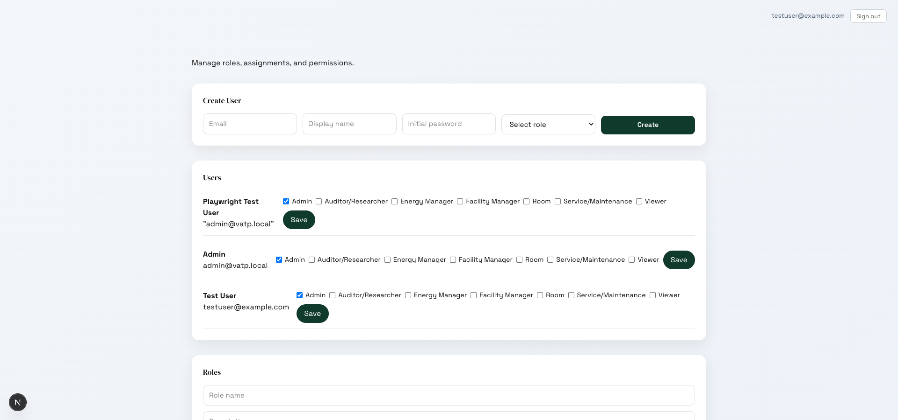
Administratora panelis ar lietotāju pārvaldību, lomu definīcijām, atļauju matricu un vadības politikām.
7 definētas lomas
- Admin — Pilna piekļuve sistēmai
- Facility Manager — Ēkas/ierīču darbība
- Energy Manager — Enerģijas analītika un tarifi
- Service/Maintenance — Ierīču apkope un vadība
- Auditor/Researcher — Tikai lasīšana audita vajadzībām
- Viewer — Tikai lasīšana paneļiem
- Room — Planšetes lietotājs komforta atsauksmēm
Vadības politikas
Drošības ierobežojumi HVAC komandām, konfigurējami katram ierīces tipam:
siltumsūkņa temperatūra (15–55°C), vārsta pozīcija (0–100%),
ventilatora ātrums (0–100%), avārijas apstādināšana (vienmēr iespējota).
11
Atbilstība
Audita žurnāls
Pilns, negrozāms žurnāls par visu, kas notiek sistēmā — filtrējams pēc lietotāja, darbības veida, resursa un datuma.
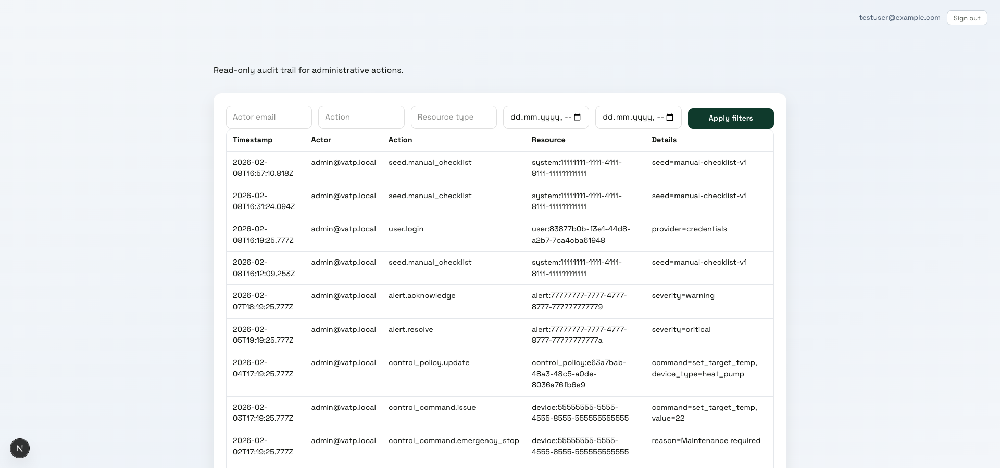
Reģistrē: pieteikšanos · ēku, telpu, sensoru izveidi un dzēšanu · brīdinājumu apstiprināšanu · HVAC komandas · politiku izmaiņas · avārijas apstādināšanu. Tikai lasāms.
12
Piekļuves kontrole
Piekļuves lomas
7 definētas lomas ar atļaujām katram resursa veidam.
| Resurss/spēja |
Admin |
Facility Mgr |
Energy Mgr |
Service |
Auditor |
Viewer |
Room |
| Lietotāji un lomas |
R/C/U/D |
R |
- |
- |
- |
- |
- |
| Ēkas/stāvi |
R/C/U/D |
R/C/U/D |
R |
R |
R |
R |
- |
| Telpas |
R/C/U/D |
R/C/U/D |
R |
R |
R |
R |
R (savas) |
| Sensori/ierīces |
R/C/U/D |
R/C/U/D |
R |
R/C/U |
R |
R |
R (savas) |
| Paneļi/analītika |
R |
R |
R/C/U |
R |
R |
R |
R (pamata) |
| Vadības komandas |
X |
X |
- |
X |
- |
- |
- |
| Komforta atsauksmes |
R |
R |
R |
R |
R |
R |
R/C (savas) |
| Audita žurnāli |
R |
R |
R |
R |
R |
R |
- |
Apzīmējumi: R = Lasīt, C = Izveidot, U = Labot, D = Dzēst, X = Vadīt
Foajē un publiskais ekrāns
TV displeja režīms
Ekrāns foajē vai koridorā — bez pieteikšanās. Automātiski mainās starp 4 skatiem ik 20 sekundes ar aktuāliem datiem.
14
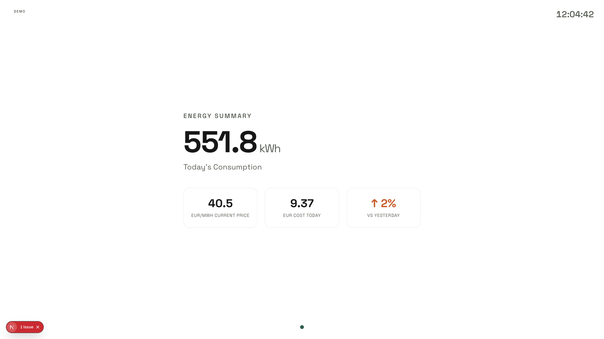
Enerģijas kopsavilkuma panelis — Šodienas patēriņš (551,8 kWh), pašreizējā elektroenerģijas cena (40,5 EUR/MWh), dienas izmaksas un dienu salīdzinājuma tendence.
15
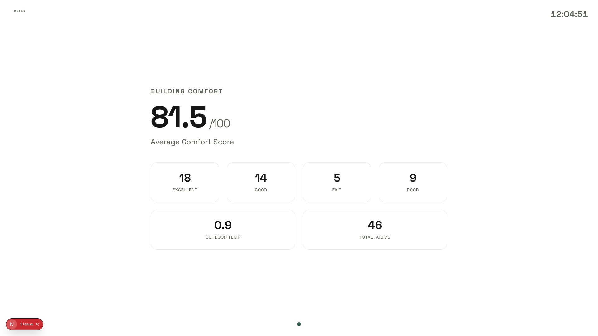
Ēkas komforta panelis — Vidējais komforta vērtējums (81,5/100), telpu sadalījums pa kategorijām (Lielisks/Labs/Apmierinošs/Slikts), ārējā temperatūra, uzraudzīto telpu skaits.
16
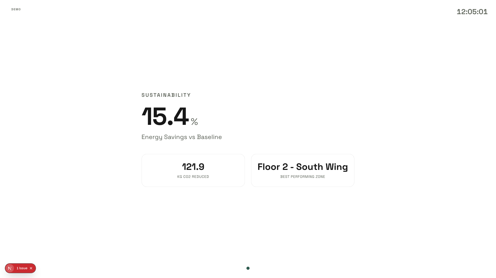
Ilgtspējas panelis — Enerģijas ietaupījumi pret bāzlīniju (15,4%), CO2 samazinājums (121,9 kg) un vislabāk darbojošās zonas noteikšana.
17
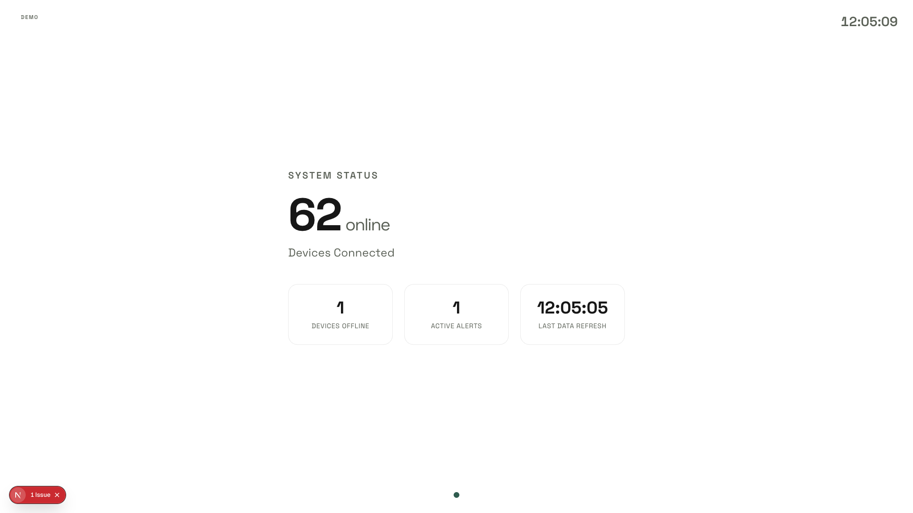
Sistēmas statusa panelis — Ierīces tiešsaistē (62), ierīces bezsaistē (1), aktīvie brīdinājumi (1) un pēdējā datu atsvaidzināšanas laiks.
18
Sistēmas ainava
Kā sistēma izskatās fiziski
Edge kontrolieris pārvalda ēku lokāli. Mākonis palīdz ar analītiku un AI apmācību, bet ikdienas darbam nav vajadzīgs.
Ēkā — VATP
🌡️ HVAC iekārtas — siltumsūkņi, dzesētāji, ventilācija (BACnet / Modbus)
⚡ Enerģijas skaitītāji — viedie skaitītāji, apakšskaitītāji (Modbus / MQTT)
📡 Telpu sensori — temp. / CO₂ / mitrums caur dokstacijām (Wi-Fi → REST)
↓
Edge kontrolieris — lokāls serveris
- Protokolu vārtejas (BACnet / Modbus / MQTT → REST)
- Reāllaika AI secinājumi (lokālie ML modeļi)
- HVAC iestatījumu optimizācijas loģika
- Datu buferis ar saglabāšanu un pārsūtīšanu
Lietojumprogrammu slānis — lokāls serveris
- Next.js tīmekļa lietotne (paneļi, RBAC, brīdinājumi)
- PostgreSQL + TimescaleDB (90 dienu neapstrādātu datu glabāšana)
- Datu ieplūdes API (POST /api/ingest)
↓ sinhronizācija ik pēc dažām stundām
Mākoņa analītikas slānis — Google Cloud / EU reģions
📊 BigQuery — ilgtermiņa laika rindas & portfeļa analītika
🤖 ML apmācības platforma — modeļu apmācība katru mēnesi
📦 Modeļu reģistrs — versiju ML artefakti
Ārējie API, kas baro sistēmu: Nord Pool (elektroenerģijas cenas, ik stundu) · Open-Meteo (laika prognoze, ik stundu) · Elektrum (plānots)
Galvenais princips: Edge kontrolieris vada ēku ar lokālo AI — pat bez interneta. Mākonis uzlabo analītiku un apmāca modeļus, bet nav priekšnoteikums ikdienas darbam.
19
Nākotnes perspektīva
No pirmās ēkas uz…
Sākam ar VATP, tālāk — Ventspils ražotnes un brīvosta, pēc tam jebkura ēka, jebkur.
🏢
Tagad — Pilots
VATP
- 1 ēka, īsti sensori
- Pierādīt enerģijas ietaupījumus
- Pārbaudīt AI modeļus
- Vākt lietotāju atsauksmes
→
🏙️
Tālāk — Ventspils mērogs
Ventspils ražotnes un brīvosta
- 5–10 ēkas ar dažādiem HVAC profiliem
- Kopīga analītika mākonī
- Enerģijas salīdzinājumi starp ēkām
- AI modeļi kļūst precīzāki ar vairāk datiem
→
🌍
Nākotnē — Produkts
Jebkura ēka, jebkur
- SaaS platforma jebkuram klientam
- Jebkurš reģions, jebkurš sensoru ražotājs
- Abonēšanas vai ietaupījumu dalīšanas modelis
- Izmērāms ROI katrai ēkai
Jaunu ēku pievienot nozīmē pieslēgt sensorus — AI, analītika un lietotne jau ir gatavi.
20
Biznesa modelis
Kā sistēma darbosies ar vairākiem klientiem?
Šis ir arhitekturāls lēmums, kas atkarīgs no biznesa modeļa — vajag vienoties.
A variants — viena kopīga platforma
Visi klienti izmanto vienu sistēmu. Katrs redz tikai savus datus. Kopīga AI infrastruktūra.
- Lētāk uzturēt — viena instance
- AI modeļi var mācīties no visām ēkām (ar piekrišanu)
- Strikta datu atdalīšana starp klientiem
- Piemērots SaaS modelim
B variants — atsevišķa sistēma katram klientam
Katrs klients saņem savu atsevišķu sistēmu — savu datubāzi, savu lietotni, savus AI modeļus.
- Vienkāršāka datu atbildība un GDPR
- Klients kontrolē savu infrastruktūru
- Dārgāk uzturēt — N atsevišķas instances
- Piemērots uzņēmumu vai lokāliem līgumiem
Jautājums: Vai VATP pārdod sistēmu katram klientam atsevišķi, vai pārvalda ēkas centrāli klientu vārdā? No tā atkarīgs, kurš variants der.
21
AI un inteliģence
Ko AI īsti vajadzētu darīt?
Dati plūst, sistēma strādā. Nākamais jautājums — ko AI konkrēti darīs ar šiem datiem?
Ieteiktie modeļu kandidāti
Enerģijas izmaksu minimizēšana
Uzsildīt vai atdzesēt, kamēr elektroenerģija ir lēta, un samazināt patēriņu dārgajās stundās. Ātrākais ietaupījums.
Apkures/dzesēšanas pieprasījuma prognoze
Paredzēt, cik apkures vai dzesēšanas rīt vajadzēs — pēc laika prognozes, apmeklējuma un kalendāra.
Komforta anomāliju atklāšana
Pamanīt, kad telpā kļūst neērti, pirms to ziņo cilvēki — pēc CO₂, temperatūras un atsauksmju kombinācijas.
Iekārtu bojājumu prognozēšana
Atklāt siltumsūkņa darbības pasliktināšanās modeļus pirms atteikumiem. Samazināt neplānotos dīkstāves laikus.
Atvērti jautājumi, uz kuriem jāatbild
Kāds ir galvenais optimizācijas mērķis?
Zemākās izmaksas? Mazākais CO₂? Augstākais komforts? Sajaukums? Tas nosaka, kuru modeli veidot vispirms.
Vai mums ir apmeklējuma dati?
Apmeklējums ir spēcīgākais komforta pieprasījuma prognozētājs. Kalendārs? kustības sensori? caurlaidzības dati?
Cik daudz vēsturisku datu šobrīd ir pieejams?
Prognozēšanas modeļiem nepieciešami vismaz 3–6 mēneši tīru sensoru datu. Vai var aizpildīt no esošās BMS?
Kas validē un apstiprina AI lēmumus?
Pilna automatizācija, vai ēku pārvaldnieks apstiprina HVAC izmaiņas? Nosaka cilvēka iesaistes modeli.
Atvērti jautājumi
Atvērti jautājumi
Tehniskie un biznesa jautājumi, kuri vēl gaida atbildi.
23
Nepieciešami lēmumi
Atvērti tehniskie lēmumi
Lēmumi, kas ietekmē arhitektūru un integrāciju — jāvienojas pirms izvietošanas.
Tehnisks lēmums
Datu pārsūtīšanas vienošanās
Mūsu API ir gatavs. Jāvienojas par protokolu (MQTT/HTTP/WS), datu formātu, kļūdu apstrādi un ātruma ierobežojumiem.
Tehnisks lēmums
Edge kontroliera izvietošana
Visticamāk atsevišķs lokāls serveris. Jāapstiprina fiziskā izvietošana, aparatūras īpašumtiesības un lokālās uzstādīšanas plāns.
Tehnisks lēmums
Datu glabāšanas vieta
Tikai lokāli, lokāli + EU mākonis, vai pilnībā mākonī. Šobrīd strādājam ar lokālu primāro + EU mākoņa dublējumu.
Tehnisks lēmums
Integrācijas testēšanas atbildība
Kas atbild par testēšanu ar īstām HVAC iekārtām un lauka protokoliem (BACnet, Modbus, MQTT)? Kritiski TRL 5/7 vajadzībām.
Tehnisks lēmums
Datu glabāšana un M&V metodoloģija
90 dienu neapstrādātu datu glabāšana jau ieviesta. Jāvienojas par retināšanas politiku un Mērījumu un verifikācijas pieeju.
Tehnisks lēmums
Uzraudzība un incidentu reaģēšana
Brīdinājumi ir definēti. Kas reaģē uz tiem? Kādi ir SLA?
24
Nepieciešami lēmumi
Atvērti biznesa lēmumi
Lēmumi par biznesa modeli, atbildību un izmēģinājuma plānu.
Biznesa lēmums
Sensoru partneris un dokstaciju topoloģija
Vai dokstacija ir obligāta? Kāds ieviešanas modelis? Vai šis sensoru piegādātājs joprojām ir pareizais partneris, ņemot vērā dokstacijas atkarību?
Biznesa lēmums
GDPR datu pārziņa/apstrādātāja lomas
Nepieciešama formāla sensoru un lietotāju datu atbildības noteikšana saskaņā ar GDPR.
Biznesa lēmums
Atbalsts pēc izmēģinājuma un izmaksu atbildība
Kas nodrošina pastāvīgo atbalstu? Kas maksā par edge aparatūru un mākoņa skaitļošanu?
Biznesa lēmums
TRL 5/7 kritēriji un komerciālais modelis
Ko nozīmē "gatavs" TRL 5 un TRL 7? Kāds biznesa modelis — projekts, abonements vai hibrīds?
Biznesa lēmums
Izmēģinājuma apjoms un laika grafiks
Kuras ēkas/stāvi sākotnējai izvietošanai? Cik ilgs izmēģinājuma posms? Kādi veiksmes rādītāji?
Biznesa lēmums
Komunikācija ar apmeklētājiem un vadību
Kā paziņojam par sistēmas statusu, enerģijas ietaupījumiem un komforta uzlabojumiem — ēkas apmeklētājiem un vadībai?
25
Ceļvedis
Kas nāk tālāk
Ko darām tuvākajā laikā, lai no prototipa pārietu uz īstu izvietošanu.
Tūlītēji (bloķē izvietošanu)
- 1 Vārtejas izstrāde — savienot Edge kontrolieri ar īstajām HVAC iekārtām un sensoriem
- 2 Īsto sensoru datu izmantošana — aizstāt maketdatus ar īstu telemetriju no ēkas
- 3 Edge kontroliera izvietošana — aparatūra, izvietojums, uzstādīšana
Tuvākajā laikā (izmēģinājuma gatavība)
- 4 Sensoru partnera apstiprināšana — dokstacijas topoloģija vai alternatīvas
- 5 AI modulis (mākonis) — BigQuery sinhronizācija + slodzes prognozēšanas modelis
- 6 Elektrum integrācija — enerģijas piegādātāja norēķini reālajām izmaksām
- 7 TRL pieņemšanas kritēriji — definēt "gatavs" TRL 5 un TRL 7 vajadzībām
Paldies
Jautājumi, komentāri un lēmumi ir gaidīti.
VATP
·
IPCEI-CIS
·
Februāris 2026